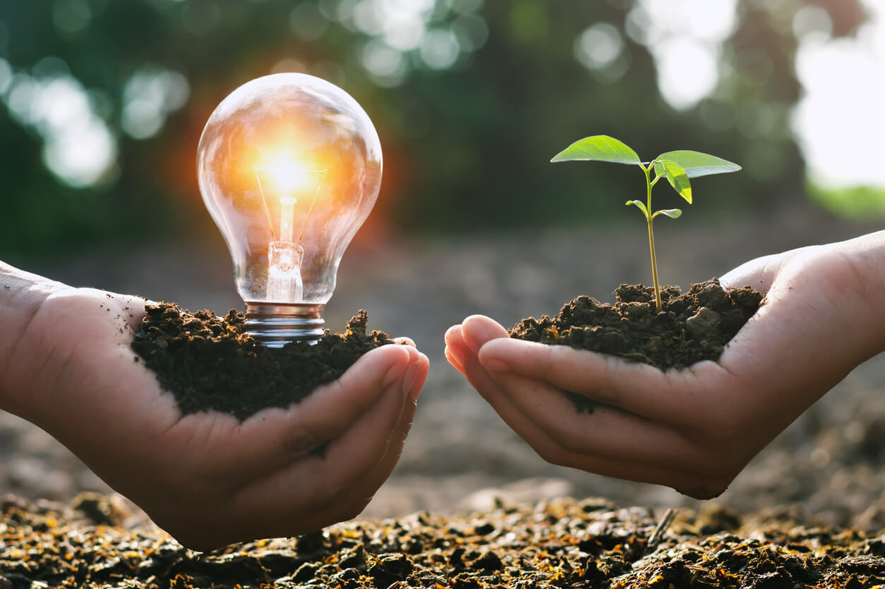
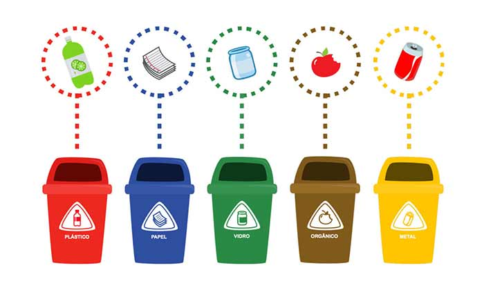

Boas Práticas Sustentáveis nas Empresas
Adotar práticas sustentáveis ajuda a reduzir impactos ambientais, melhorar a reputação da empresa e promover responsabilidade social.
💧 Gestão de Água
- Instalar torneiras com sensores e descargas de duplo fluxo.
- Realizar manutenção preventiva para evitar vazamentos.
- Reutilizar água da chuva para limpeza e irrigação.

⚡ Gestão de Energia
- Substituir lâmpadas comuns por LED.
- Utilizar sensores de presença em ambientes com pouca circulação.
- Desligar equipamentos eletrônicos fora do expediente.

🏢 Políticas Internas
- Criar campanhas educativas sobre práticas sustentáveis.
- Incentivar o uso de transporte sustentavel ou bicicleta.
- Implementar coleta seletiva no escritório.

🌱 Compromisso com a Sustentabilidade
- Adotar fornecedores com responsabilidade ambiental.
- Reduzir o consumo de papel por meio da digitalização.
- Investir em treinamentos sobre ESG e responsabilidade ambiental.